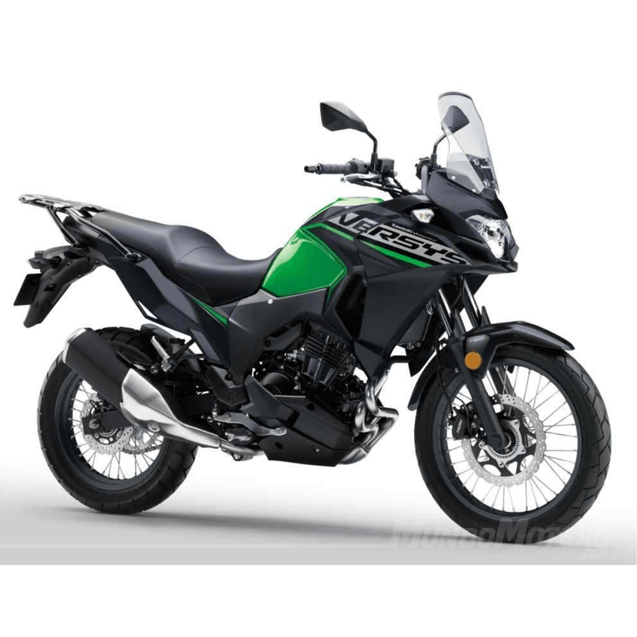
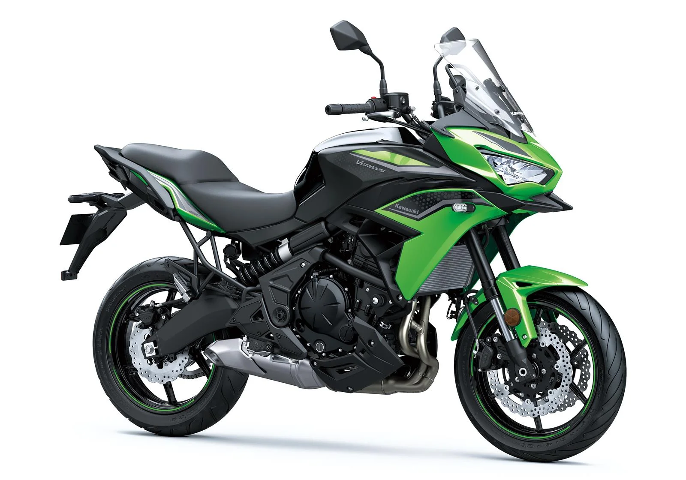

Top motos del segmento 2025
KAWASAKI Versys 300
- Velocidad máxima: 132 KM/H
- Potencia: 39.5 HP
- Cilindrada: 296 CC
KAWASAKI Versys 600
- Velocidad máxima: 190 KM/H
- Potencia: 69 HP
- Cilindrada: 649 CC
Libertad sin límites en cada terreno. Diseñadas para la aventura, ofrecen suspensión de gran recorrido, resistencia extrema y control total en caminos difíciles. Ideales para quienes buscan adrenalina, contacto directo con la naturaleza y superar cualquier obstáculo.